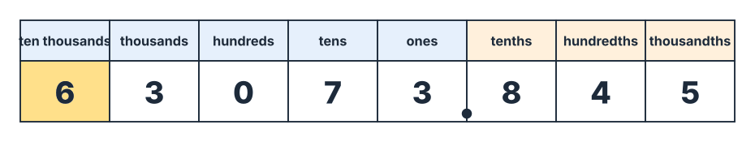
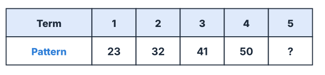
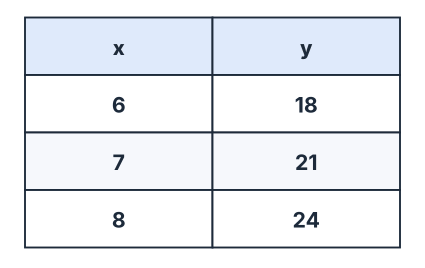
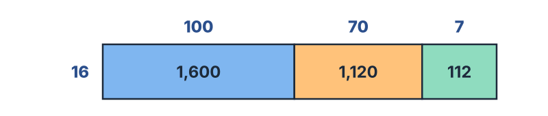
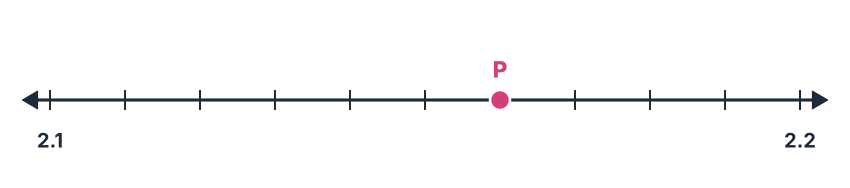

Session 1 · Operations and Algebraic Thinking; Number and Operations in Base Ten
- The place‑value chart shows a number. What is the value of the highlighted digit?MULTIPLE CHOICE

(A)6(B)6,000(C)60,000(D)600,000Answer: (C) 60,000- The highlighted digit 6 is in the ten thousands place.
- Value: 6 × 10,000 = 60,000.
- Wren multiplied 29 × 4.32 and got the digits 12528 but forgot the decimal point. What is the correct product?MULTIPLE CHOICE(A)1,252.8(B)12.528(C)12,528(D)125.28Answer: (D) 125.28
- Estimate: 29 × 4 ≈ 116.
- So the product is 125.28.
- One batch of granola uses 34 cup of oats. How many cups of oats are needed for 2 batches?MULTIPLE CHOICE(A)234 cups(B)112 cups(C)34 cup(D)223 cupsAnswer: (B) 112 cups
- Multiply: 2 × 34.
- = 112 cups.
- Which expression has the same quotient as 9.18 ÷ 0.54?MULTIPLE CHOICE(A)0.918 ÷ 54(B)9.18 ÷ 54(C)918 ÷ 54(D)918 ÷ 0.54Answer: (C) 918 ÷ 54
- Multiplying the dividend and the divisor by the same number (100) keeps the quotient the same.
- 918 ÷ 54 = 17.
- The table shows a pattern. What number belongs in place of “?” (term 5)?MULTIPLE CHOICE

(A)50(B)51(C)68(D)59Answer: (D) 59- The rule is “Add 9.”
- Term 5 = 59.
- 331 students are going to a museum. Each bus holds 28 students and costs $83 to rent. What is the total cost of the buses?MULTIPLE CHOICE(A)$996(B)$27,473(C)$913(D)$2,324Answer: (A) $996
- 331 ÷ 28 = 11 R 23, so 12 buses are needed.
- 12 × $83 = $996.
- Which ordered pair comes from the table and could be graphed?MULTIPLE CHOICE

(A)(18, 6)(B)(6, 9)(C)(7, 18)(D)(6, 18)Answer: (D) (6, 18)- Each row gives (x, y).
- (6, 18) is in the table.
- The area model shows 2,832 ÷ 16. What is the quotient?MULTIPLE CHOICE

(A)193(B)283(C)100(D)177Answer: (D) 177- Add the lengths across the top: 100 + 70 + 7.
- Quotient = 177.
- Point P is on the number line. Round the number at P to the nearest tenth.MULTIPLE CHOICE

(A)2.16(B)2.2(C)2(D)2.1Answer: (B) 2.2- P is at 2.16.
- 2.16 is closer to 2.2.
- Pattern A starts at 0 and adds 2; Pattern B starts at 0 and adds 6. Which ordered pair (A, B) could come from these patterns?MULTIPLE CHOICE(A)(30, 10)(B)(10, 32)(C)(11, 30)(D)(10, 30)Answer: (D) (10, 30)
- Every pair has the form (A, 3 × A) with A a multiple of 2.
- (10, 30) fits.
- The area model shows 889 × 85. Add the partial products. What is the product?MULTIPLE CHOICE
 (A)11,557(B)75,675(C)71,120(D)75,565Answer: (D) 75,565
(A)11,557(B)75,675(C)71,120(D)75,565Answer: (D) 75,565- Add every partial product in the model.
- 64,000 + 6,400 + 720 + 4,000 + 400 + 45 = 75,565.
- The model shows 0.4 × 0.4. The darkest part is where the two shadings overlap. What is the product?MULTIPLE CHOICE
 (A)1.6(B)0.8(C)16(D)0.16Answer: (D) 0.16
(A)1.6(B)0.8(C)16(D)0.16Answer: (D) 0.16- The overlap is 4 × 4 = 16 small squares out of 100.
- 16 hundredths = 0.16.
- Select ALL the problems that are matched with the correct answer.SELECT ALL THAT APPLYPack A has 6 pencils for $4.38. Pack B has 2 pencils for $4.70. Which pack costs less per item? → Pack APack A has 5 pencils for $3.70. Pack B has 4 pencils for $4.36. Which pack costs less per item? → Pack BPack A has 4 pencils for $9.08. Pack B has 2 pencils for $2.80. Which pack costs less per item? → Pack APack A has 4 pencils for $4.72. Pack B has 2 pencils for $5.96. Which pack costs less per item? → Pack AAnswer: Pack A has 6 pencils for $4.38. Pack B has 2 pencils for $4.70. Which pack costs less per item? → Pack A; Pack A has 4 pencils for $4.72. Pack B has 2 pencils for $5.96. Which pack costs less per item? → Pack A
- Work each problem and compare with the answer shown.
- Pack A has 6 pencils for $4.38. Pack B has 2 pencils for $4.70. Which pack costs less per item? → Pack A: correct.
- Pack A has 5 pencils for $3.70. Pack B has 4 pencils for $4.36. Which pack costs less per item? → Pack B: not correct.
- Pack A has 4 pencils for $9.08. Pack B has 2 pencils for $2.80. Which pack costs less per item? → Pack A: not correct.
- Pack A has 4 pencils for $4.72. Pack B has 2 pencils for $5.96. Which pack costs less per item? → Pack A: correct.
- Select ALL the problems that are matched with the correct answer.SELECT ALL THAT APPLYWhat is 10³ written in standard form? → 1,000What is 10⁴ written in standard form? → 10,000What is 10² written in standard form? → 20What is 10⁵ written in standard form? → 10,000Answer: What is 10³ written in standard form? → 1,000; What is 10⁴ written in standard form? → 10,000
- Work each problem and compare with the answer shown.
- What is 10³ written in standard form? → 1,000: correct.
- What is 10⁴ written in standard form? → 10,000: correct.
- What is 10² written in standard form? → 20: not correct.
- What is 10⁵ written in standard form? → 10,000: not correct.
- Select ALL the problems that are matched with the correct answer.SELECT ALL THAT APPLY17.04 ÷ 8 → 2.1353.94 ÷ 6 → 0.89942.66 ÷ 9 → 4.7416.36 ÷ 4 → 65.44Answer: 17.04 ÷ 8 → 2.13; 42.66 ÷ 9 → 4.74
- Work each problem and compare with the answer shown.
- 17.04 ÷ 8 → 2.13: correct.
- 53.94 ÷ 6 → 0.899: not correct.
- 42.66 ÷ 9 → 4.74: correct.
- 16.36 ÷ 4 → 65.44: not correct.
- Omar solved this problem. Subtract: 59.2 − 19.21 Omar answered: 39.89 Find the mistake. What is the correct answer?SHORT ANSWERAnswer: 39.99
- Mistake: regrouped twice.
- Line up the decimal points. Write zeros to fill empty places.
- 59.2 − 19.21 = 39.99.
- The correct answer is 39.99, not 39.89.
- A store sells 160 games each week for 88 weeks. Round each number to its greatest place to estimate the total.SHORT ANSWERAnswer: 18,000
- Round: 160 ≈ 200 and 88 ≈ 90.
- Estimate: 200 × 90 = 18,000.
- 2,940 stickers are shared equally among 7 friends. How many stickers does each friend get?SHORT ANSWERAnswer: 420 stickers
- Divide the total into 7 equal groups: 2,940 ÷ 7.
- 2,940 ÷ 7 = 420 stickers.
- Without multiplying, how much greater is 7 × (34 + 22) than 6 × (34 + 22)?SHORT ANSWERAnswer: 56
- 7 groups of (34 + 22) is 1 more group than 6 groups.
- 1 × (34 + 22) = 1 × 56 = 56.
- Art supplies. A school orders 24 boxes of markers. Each box holds 36 markers and costs $2.35.CONSTRUCTED RESPONSE · 4 POINTS(a) How many markers are in the order?864 markers(b) The markers are sorted into bins of 18. How many bins are filled?48 bins(c) What is the cost of the 24 boxes?$56.40(d) The school pays with $60. How much change does it get?$3.60Scoring: 1 point for each part with a correct answer and supporting work; give the point for a correct method that carries forward an earlier wrong answer.